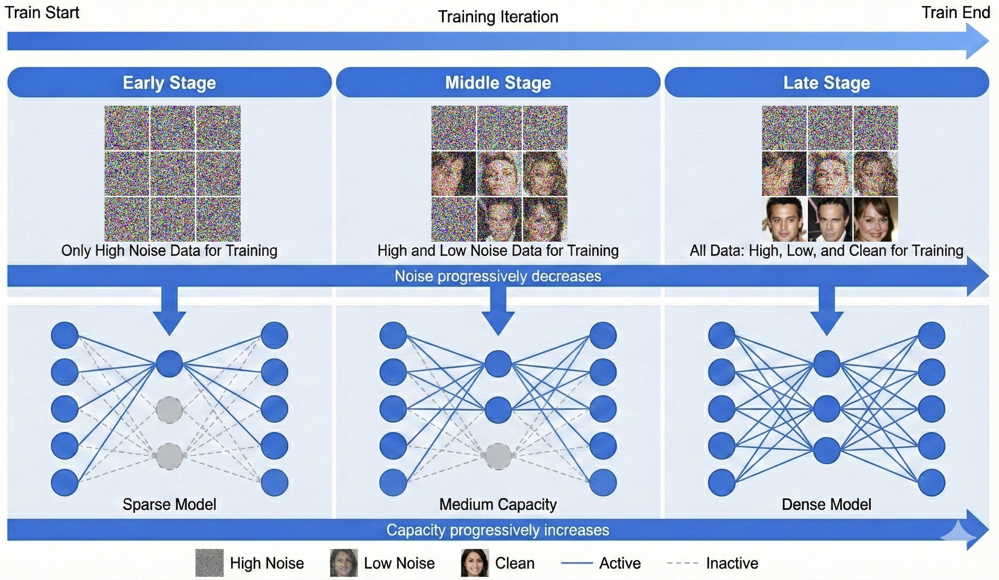
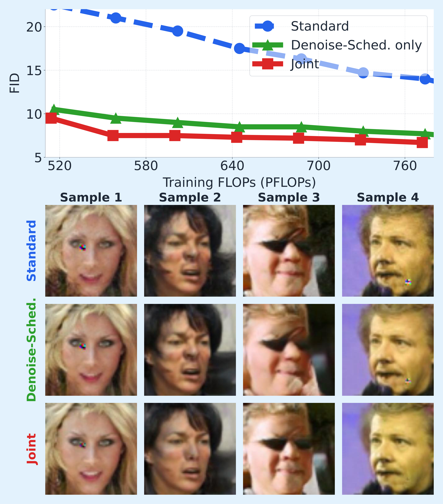

Early stage
Learn coarse structure
Begin with high-noise denoising tasks. Update a subset of neurons while reserving the remaining capacity.
ICML 2026 · Foundations of Deep Generative Models Workshop
1 Rensselaer Polytechnic Institute2 New Jersey Institute of Technology3 University of Pennsylvania4 Michigan State University5 IBM Research
A curriculum for what the model learns—and when its capacity becomes available.

Training a diffusion model (DM) amounts to solving a continuum of denoising subproblems whose difficulty varies with the noise level. The default practice samples these subproblems uniformly and updates all parameters jointly, which entangles feature representations and degrades generation. Recent empirical work suggests that presenting subproblems in an easy-to-hard order helps, yet why it helps and whether further gains are possible remain open. We propose a curriculum-based framework that schedules two ingredients during optimization: the difficulty of the denoising subproblems, and the share of parameters that is allowed to evolve. Training starts from easier subproblems on a subset of trainable neurons; harder subproblems are introduced later, with the remaining neurons gradually unlocked. The reserved capacity protects subtle, low-amplitude features from being overwritten while the network is still fitting coarse structure. We provide the first analysis connecting this curriculum to the training dynamics and generalization error of DMs, identifying a coarse-to-fine learning order that emerges implicitly under our schedule. Experiments on multiple datasets and architectures confirm the predicted gains over uniform-noise training.
Diffusion training asks a single model to solve denoising problems at many noise levels. Those problems emphasize different information: coarse structure at high noise and finer detail at low noise. We study how to organize these learning tasks while preserving capacity for features that emerge later.
Early stage
Begin with high-noise denoising tasks. Update a subset of neurons while reserving the remaining capacity.
Middle stage
Introduce lower-noise examples and progressively activate more trainable capacity.
Late stage
Train across the full scheduled noise range with the available capacity for finer feature learning.
The range of denoising tasks expands from high-noise examples toward lower-noise examples over training. The high-noise tasks remain part of the later mixture as the range broadens.
A sparse-to-dense schedule progressively activates neurons. Reserving part of the capacity early is intended to protect weaker features from interference while the model is learning dominant structure.
The analysis follows how a shallow nonlinear denoiser learns feature directions over time. It connects the curriculum to a coarse-to-fine learning order and to the generalization behavior of the learned denoising function.
High-noise tasks favor stronger, coarse feature directions. Their early influence helps explain why learning all tasks together can interfere with weaker features.
As lower-noise tasks become available, additional neurons can learn subtler directions without having already specialized to the early dominant features.
The theory links this separation of feature directions to generalization error, motivating a coordinated schedule over denoising tasks and trainable capacity.
The theoretical results use a structured feature model and a two-layer ReLU network. They provide a mechanism for understanding curriculum learning under these assumptions; experiments investigate the idea in practical diffusion architectures.
The local manuscript compares standard training, a denoising schedule alone, and the joint curriculum on CelebA-64 with U-ViT. The plot measures FID against cumulative training FLOPs; sample rows compare the three methods at the same final training step (200k).

The denoising-only baseline distinguishes the joint curriculum from noise scheduling alone. These figures follow the local ICML2026.tex manuscript and its original assets; they have not been verified against the final workshop PDF.
@inproceedings{sun2026curriculum,
title={A Theoretical Analysis of Curriculum Training
in Diffusion Models},
author={Sun, Jiawei and Zhang, Shuai and Li, Hongkang
and Liu, Sijia and Chen, Pin-Yu and Wang, Meng},
booktitle={ICML Workshop on Foundations of
Deep Generative Models (FoGen)},
year={2026},
url={https://openreview.net/forum?id=AxbjagGhku}
}